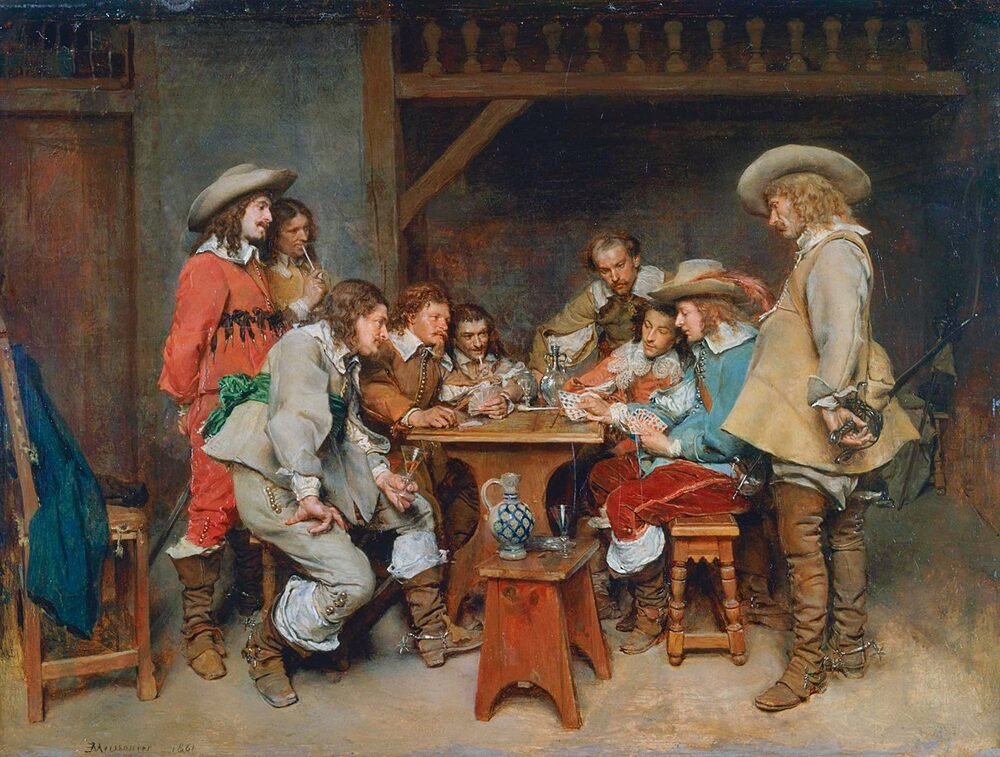

B1 · Stories & Literature
The Interview Room
A detective, a neighbor who says he took the trash out, and one detail that does not fit.
Play the audio and follow along, then read it again on your own. Tap or hover over a highlighted word to see what it means.
Detective Wayne: Good morning, Mr. Rogers. Thank you for coming in. I'd like to start with Sunday night. What were you doing at two in the morning?
Rogers: Good morning, detective. I was waiting up for my favorite show. It airs late.
Detective Wayne: Was anyone with you?
Rogers: My wife, Sharon.
Detective Wayne: Sharon told us she fell asleep at one thirty.
Rogers: That's right. We were watching television and she started snoring. That's how I knew she'd fallen asleep.

Detective Wayne: Your neighbor Philip says he saw you through his window at ten past two. He says you were running down the street.
Rogers: Then he's lying. Philip loves a rumor. He'll repeat anything.
Detective Wayne: Two security cameras on that block agree with him. You were outside on Sunday night, Mr. Rogers. Why did you tell me you weren't?
Rogers: All right — I took the trash out. That's all. It didn't seem worth mentioning.
Detective Wayne: It wasn't worth mentioning. Mrs. Carter was killed on that street while she was walking home, and you were the one person outside.
Rogers: That wasn't me. I swear it wasn't me.
Detective Wayne: Did you see Mrs. Carter while you were out there?
Rogers: Yes. She was arguing with a man near the corner. Tall, dark coat. He looked a lot like Philip, actually.
Detective Wayne: Arguing about what?
Rogers: He was shouting that she'd been seeing someone else. He was furious.
Detective Wayne: And then what did you hear?
Rogers: Gunshots. Two of them. I ran straight back inside and locked the door.
Detective Wayne: Two gunshots.
Rogers: Yes. That's why I was running. Anyone would have run.
Detective Wayne: Mr. Rogers, Mrs. Carter was not shot. There was no firearm on that street on Sunday night, and no neighbor reported a shot — not Philip, not anyone. So I'd like you to tell me again what you heard.
Rogers: I… I may have been mistaken. It was late.
Detective Wayne: You were certain thirty seconds ago. You gave me a number. Would you like to start again, or would you like to call a lawyer first?
Rogers: I think I'd like the lawyer.
Detective Wayne: That's your right. Interview suspended at nine forty-one.
Key Vocabulary
- to wait up to stay awake instead of going to bed
- to air to be broadcast on television or radio
- a rumor information passed between people that may not be true
- a security camera a camera that records a place to prevent or prove crime
- to swear to say very seriously that something is true
- a firearm a gun
- to be mistaken to be wrong about something
- a lawyer a person qualified to advise and represent you in law
- to suspend to stop something temporarily
The Interview Room — B1 · Stories & Literature · Renan the Teacher, English Language Academy · https://renangrossi.github.io/englishclasses/reading/b1/investigation-story.html
Interactive Exercises
Practice
Complete each exercise, then click Submit to see your score and an explanation for every answer.
Speaking & Writing
Discussion
There are no right answers here — use these to practice speaking, or write a short answer to each.
- Who do you think killed Mrs. Carter, and what in the dialogue makes you think so?
- Rogers lied about something small — taking the trash out. Why do innocent people sometimes lie to the police?
- The detective never raises her voice. Is that more effective than shouting? Why?
- Continue the story: write about 120 words of the next interview, with Philip in the chair.